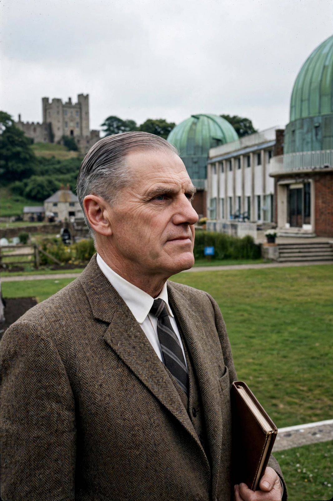

| Sir Richard van der Riet Woolley | |
|---|---|
| Born | 24 April 1906, Weymouth, Dorset, England |
| Died | 8 December 1986 (aged 80), Somerset West, South Africa |
| Office | 11th Astronomer Royal (1956–1971); Director, Mount Stromlo Observatory (1939–1956) |
| Known for | Stellar astronomy; completion of the Herstmonceux move; Anglo-Australian Observatory groundwork |

Sir Richard van der Riet Woolley (24 April 1906 – 8 December 1986) was a British astronomer who served as the eleventh Astronomer Royal from 1956 to 1971. After studies at the University of Cape Town and Gonville and Caius College, Cambridge, he worked at Mount Wilson Observatory and in Cambridge before becoming director of the Commonwealth Observatory at Mount Stromlo, Australia, in 1939.
Succeeding Harold Spencer Jones, Woolley completed the transfer of the Royal Observatory from Greenwich to Herstmonceux Castle, Sussex, and pushed for large new instruments, including the Isaac Newton Telescope (inaugurated 1967). He was sceptical of the scientific value of spaceflight — on taking office in 1956 he dismissed talk of space travel as "utter bilge" — yet he presided over the Observatory's growing involvement in the space age and supported the creation of the Anglo-Australian Observatory. His research centred on stellar motions, globular clusters and galactic structure, pursued later from South Africa, where he helped establish the South African Astronomical Observatory. He was succeeded as Astronomer Royal by Martin Ryle.